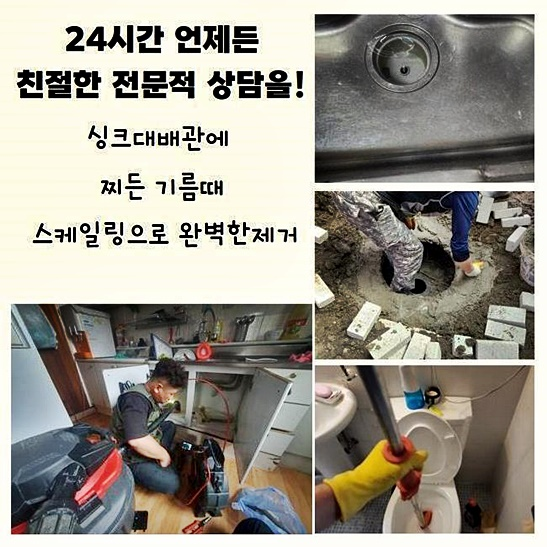
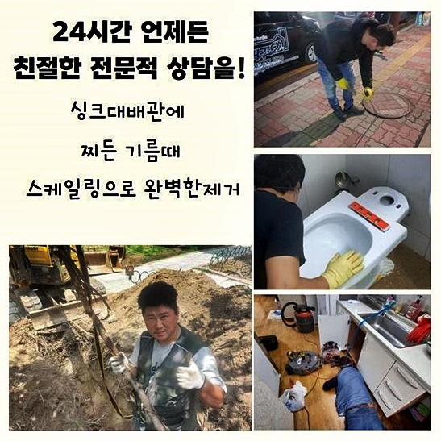
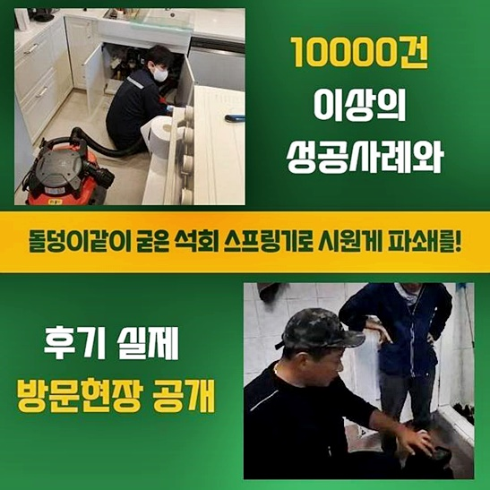
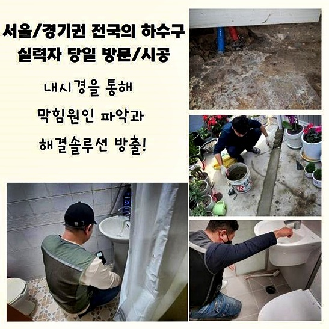
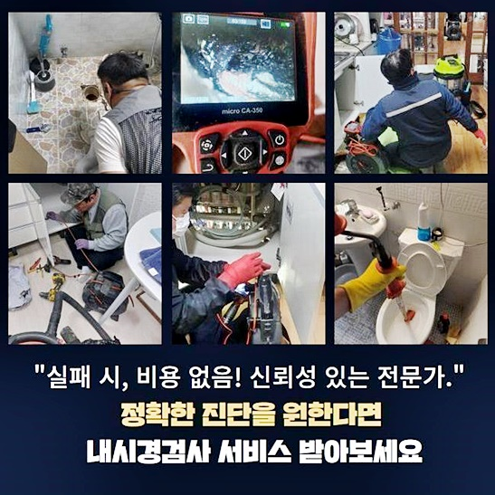

🏠 강동구 상일동씽크대배수구역류 성내동 하수구뚫는업체 통수전문
용인시 처인구 고압세척 전문 시공 후기

📋 작업 개요
- 위치: 용인시 처인구, 수원시 영통구, 화성시 동탄
- 서비스 유형: 고압세척, 내시경점검
- 작업 일시:
- 업체명: 하수구수사대 (010-5615-2118)
🔍 문제 상황
강동구 상일동씽크대배수구역류 성내동 하수구뚫는업체 통수전문
주방에서 배수장애가 발발하면 주방의 배수관로와 다른공간의 배수관들도 위생부분에 있어 좋지못한 영향을 끼치는데요
마찬가지로 배수장애가 야기되었는데 조치에 대해 힘쓰지않는다면 장판으로 새기도하고 아래세대에도 불편을 끼치게 될 수 있습니다
큰 일이 아닐거라고 단정짓는다면 예기치못할때 더욱 심한 문제들이 생겨나고 향후 1차적인 해결책을 써도 해결에는 닿을 수 없어요
그렇다면 불미스러운 사안이 발생되지 않게 하게끔 어떤조치로 타개해야되는지 여러분과 살펴볼 예정입니다
하수관에 증세가 야기된 고객님의 댁에서 문의가 접수된 후 저희 전문가는 신속히 달려갔어요
막혀버린지 하루가 경과되었고 바로 연락주시지 않은 이유를 고객분은 대수가 안될것이라고 판단하셔서 의뢰가 더뎌진것이라 설명했어요
그럼에도 불구하고 배수장애의 결함이 불거져서 의뢰를 해주신것이었습니다
왜 그런것인지 면밀하게 알아보기위하여 바닥배관을 살피니 주방라인에서 역류되는 증상이 목격되었어요
이러한 모습은 간소한 증상이 아니라 무거운 증세인걸 반증하는 시그널이라 할 수 있어요
바로 내시경을 하수도로 집어넣고 확인하였더니 초입부터 막혀진 상태를 오차없이 인지했습니다

🔎 원인 분석
💡 전문가 진단: 정밀 진단 장비를 사용하여 슬러지의 고착 여부를 판명하고 타격/세척 작업을 실시했습니다.
증상을 없애주기위하여 내시경을 제거시키고 석션장비를 가용해 오수들을 빨아내는 청소를 시작했는데요
이러한 작업들을 진행해줄 때에 석션기계의 앞부분을 힘을 주어 조인 뒤 잔해물이 청소되도록 잡아주는것이 중요해요
석션기기를 간소하게 작동시켜서는 완벽하게 개선이 안되기에 압박을 가하여 빨아들였습니다
간소하게 해결될 수 있을때에는 스프링장비를 이용해 막혀버린 곳을 해결하는 방식도 사용할 수 있겠지만 오늘 이곳에선 잔해물을 오차없이 빨아당기는 것이 최종적으로나서 문제들을 최소화하는데 큰 역할을 하므로 흡입하는 방법을 선택해준것입니다
내부에 있는 이물을 제거시키고 다시 내시경을 삽입한 뒤 심부까지 점검해보았어요
이물들은 대다수 제거된 상태지만 결함을 보이는 라인의 심부는 심각하게 막힌 모습이였죠
막혀버린 곳을 시정하고자 맨땅의 헤딩 식인 석션장치의 사용은 궁극적으로 해결되지 못한다 결론을 지었습니다
신속한 스케일링 척도를 거치도록 샤프트장치 사용을 진행해주는걸로 했죠
그런 다음 기기들을 선별하여 진행시킬 방식들과 관련해서 고객분에게 정확히 안내했는데요
이런 경우에서는 고객님도 전 단계의 진행상황을 아시는게 중요하기에 꼼꼼한 내용전달로 안심시켜드리고 결함을 온전하게 시정해주고자 노력했는데요
배수장애의 경우 갑자기 생겨나나 적합한 대처가 결여되면 피해와 더 큰 금액을 감수할 수 밖에 없는걸 알아야하겠습니다

🔧 작업 과정
설명 이 단계 다음엔 의뢰자께선 빠르게 진행을 바라셔서 곧이어 준비했어요
마련한 것은 샤프트와 점검과정에서 운용된 내시경장치로 쌓인 오염물을 목표로 해서 세척해줘요
이 단계 다음엔 스케일링 기계를 배수관으로 삽입하여 내시경장비도 이용해주며 쌓여진 오염물을 청소해주는 작업들을 진행했죠
외부에서 관찰할 길이 없는 배수관을 관찰해주면서 시공을 이행해줘야 배수관에 누적된 잔해물을 오차없이 걷어내는게 가능합니다
이 단계 다음엔에 이처럼 시공을 진행시킬 땐 내시경을 통해 여러분들도 확인할 수 있기에 신뢰있는 수리를 완벽하게 느끼실 수가 있습니다
계속하여 아래 쌓인 잔해물을 걷어내주면 하수관의 깊숙한 스팟엔 이물이 누적되는데 석션기기를 투입시켜 제거시킵니다
문제들을 발생시키는 오염원을 제거하고 내시경장치로 심부까지 확인하는데 전 구간에 걸쳐 100% 시정된 모습을 고객과 보았습니다
이것과같이 저희들은 결과들을 의뢰자와 함께 점검해요
이물이 잔존해있지만 하수관이 결함이되는 사태를 시정하지 못할 시 물이 솟구치는 증세가 발생되며 예상치못하게 악취가 발발하니 이를 참고하시어 작업들을 실시하길 권해드려요
끝으로나서 타 장소에 하수관에 결함이 야기되는 바람에 달려갔는데 당도해서 배수관이 어떤지 내시경장치로 신속히 체크했죠
내부의 상태는 심층부까지 기름때가 켜켜히 쌓이는 바람에 이물질들이 각 라인마다 붙어버림과 동시에 굳게된걸 인지했습니다
그리하여 바로 청소를 준비했죠
첫번째로 간단하게 해결가능한지 관찰하기위하여 옆으로 배수관에 석션장치를 넣어서 잔해물을 흡입하는 청소를 속행했는데요
조속하게 시공을 충분히 진행하고 내부 모습을 확인하였더니 아래에 이물이 완벽하게 사라지지않은것을 알았죠
끝으로나서에 이물이 쌓인 곳을 타겟으로 해 작업을 속행했어요
이용되는 것은 샤프트기기로 하수라인에 삽입하여 머리부분에 체인들을 곧이어 회전을 시켜 오염물을 빠른 시간 내 탈락시키는 수리를 진행했습니다
조속하게 회전이 되며 오염물을 탈락시키고 석션도구로 깊이 떨어지지않게 즉시 제거시켰습니다


✅ 작업 완료
그 다음으로 내시경기기로 놓친 부분이 있진않은지 점검해보았습니다
끝으로 하수도로 수도를 흐르게해 배수속도를 체크해보니 문제없이 배출되는 것까지 체크해보았습니다
하루빨리 배수장애들을 고쳐내고 싶으실때 편히 저희배관 해결사들을 부르시면 통수관련한 수리를 수행합니다
전화주시고 불러주신 장소로 한시간내 내방하니 작업도 그만큼 빨리 이뤄지겠죠?
마지막으로 방문하고자하는 일정들이 있으실 때도 조정할 수 있기에 이것또한 참고 부탁드립니다!


⚠️ 하수구 배관 막힘 예방 및 관리 가이드
- ✅ 머리카락, 비닐, 물티슈 등 물에 분해되지 않는 이물질은 절대 흘려보내지 마세요.
- ✅ 기름기 많은 식기는 설거지 전 키친타올로 먼저 기름때를 닦아내세요.
- ✅ 주기적으로 배수구에 뜨거운 물을 가득 부어주어 유지방 고착을 방지하세요.
- ✅ 작업 후 1년 이내 재발 시 무상 A/S 보증 서비스를 제공합니다.
💡 핵심 정리
- 확실한 장비 작업(내시경 점검 및 샤프트 스케일링)으로 원인을 뿌리 뽑습니다.
- 작업 후 1년 이내에 동일한 부위 재발 시 100% 무상 A/S 서비스를 보장합니다.
- 서울 · 경기 · 인천 전 지역에 24시간 언제든 긴급 출동할 수 있도록 항시 대기 중입니다.
❓ 자주 묻는 질문 (FAQ)
🚨 용인시 처인구 고압세척 문제로 고민이신가요?
정확한 원인 진단과 확실한 시공으로 재발 없는 해결을 약속드립니다.
24시간 긴급 출동 | 서울 · 경기 · 인천 전지역 | 1년 내 재발 시 무상 A/S